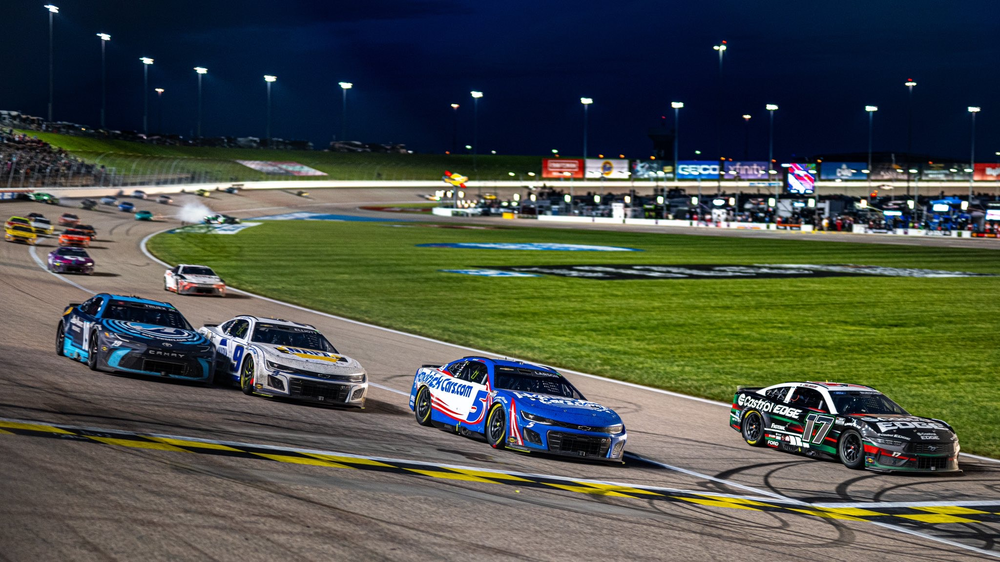
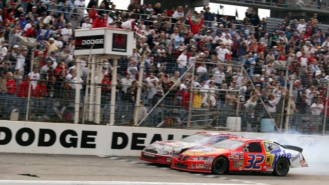

Hello, welcome to my page
Here we shall go over one of my interests also known as NASCAR, one of the most thrilling motorsport in the US. I have been a fan of NASCAR for over ten years now and I hope to share my passion with you by going over their history, how I'm became a fan and some of my favorite drivers, schemes and coincidently my favorite teams.

